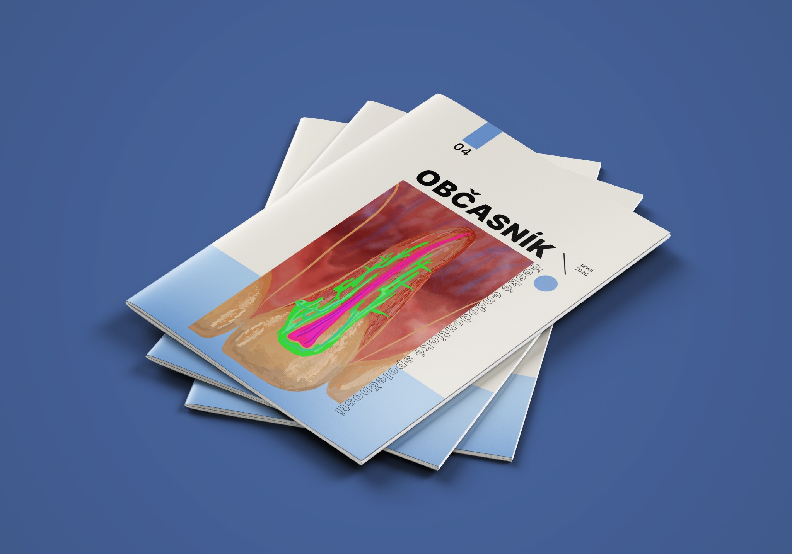

20 let
České endodontické
společnosti
2007–2027
Odbornost. Vzdělávání. Spolupráce.
Dvacet let zkušeností.
Další kapitola před námi.
Další kapitola před námi.
Kalendář akcí 2027
Pro praxi a vzdělávání

Časopis společnosti · nové vydáníObčasník ČES 2026 ↗
Přečtěte si letošní vydání. Online i jako PDF ke stažení.
Praktický nástrojObtížnost endodontického případu ↗
Formulář pro hodnocení obtížnosti a rizik endodontických případů.
Odborné dokumentyDoporučení pro praxi ↗
Materiály společnosti a dokumenty ke stažení.
Buďte součástí ČES
Připojte se k odborné společnosti, která podporuje vzdělávání, spolupráci a rozvoj endodoncie v České republice.